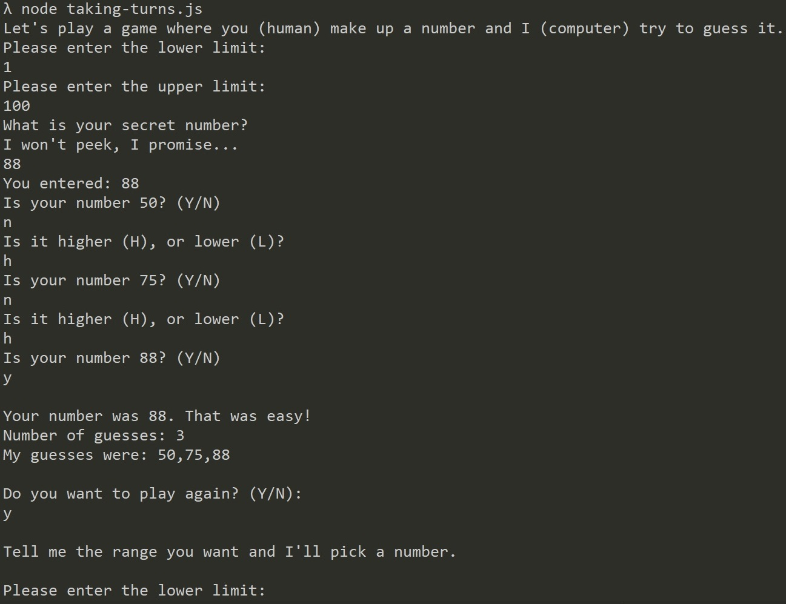
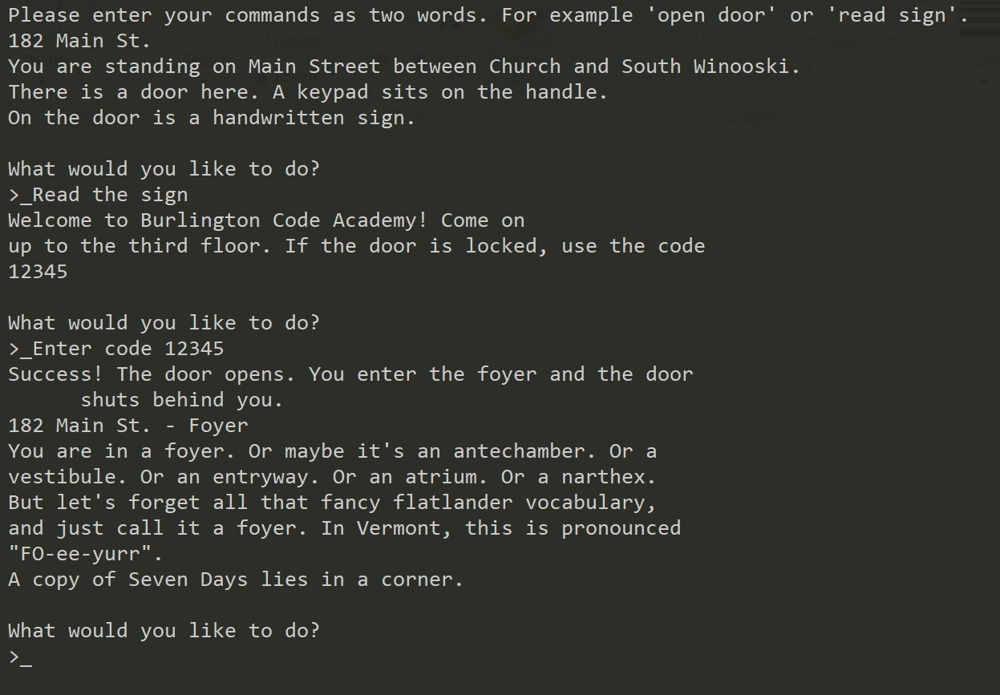
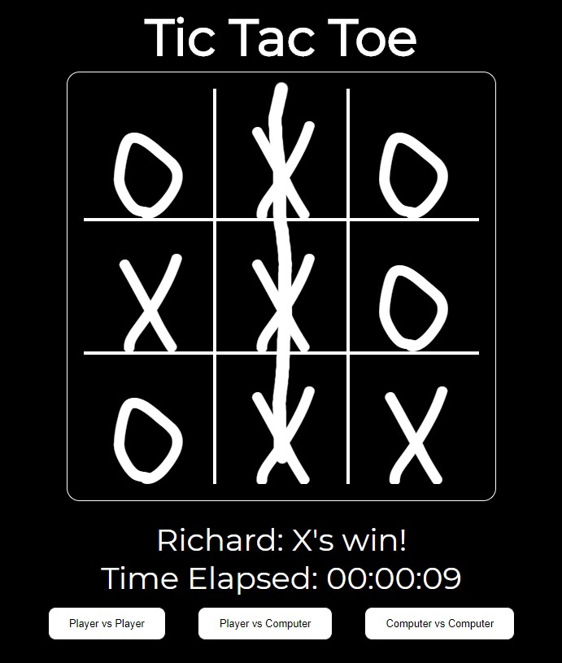
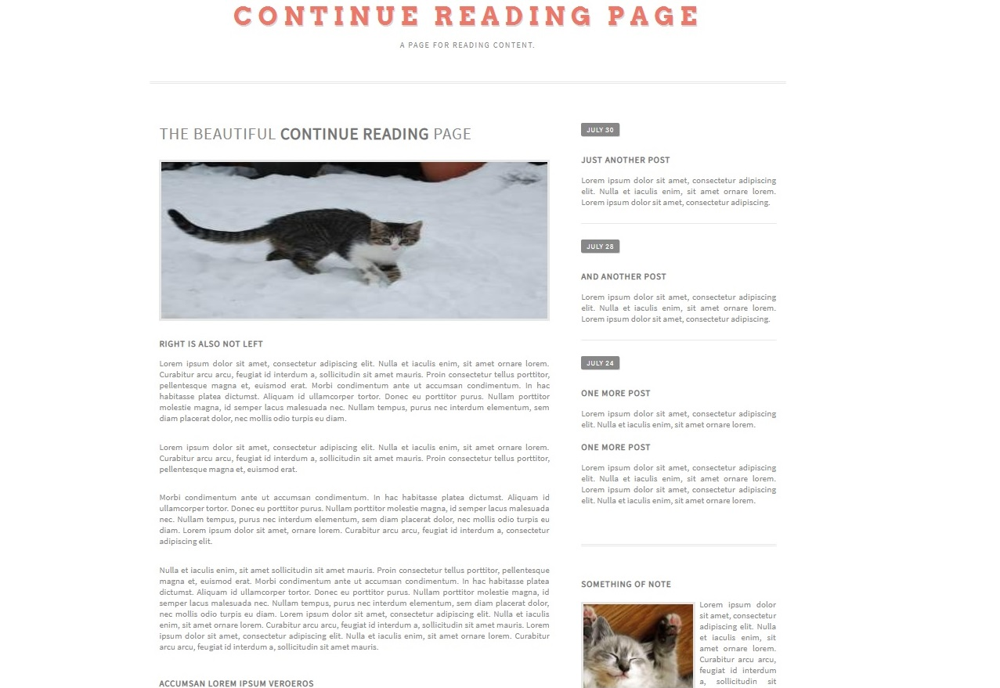

My Projects:
Learning the Fundamentals of Web Development
Guess the Number
The purpose of this project was to develop a command line interface game that would take user input using await defining a range of numbers and have the computer guess the number in the minimum number of tries. The game then switches to having the computer pick a number and the player guesses. Wins and total guesses are tracked across a session and reported in a summary at the end. This project uses exclusively JavaScript and a terminal.
Zorkington
This project was also built for use in a terminal using exclusively JavaScript. The purpose of this project was to use objects, methods, and classes to create a world and track a user through a choose your own adventure. The scope was limited to only a few rooms but the structure of the game allows for quick and easy implementation of additional rooms, items, and interactions.
Tic Tac Toe
Our first web-based project. This Tic-Tac-Toe game uses HTML, CSS, and JavaScript and was our first foray into events , and more specifically, listeners . Using an event listener on the board element allowed me to capture where the user was clicking and then use JavaScript and some logic to enter either an X or an O. Some additional logic also allows the computer to play against the player by tracking which cells are available. The computer can even play against itself. Future work on this project will start with refactoring the code to implement the board as an object with the functions currently used moved to methods on the board object. This will allow for less explicit coding and more flexibility in future game modes and design. Additionally, more AI logic will be added to allow the computer to pick non-randomly. Ideally, selecting a difficulty level will select different AI logic.
Remock
For this project, we were tasked with designing a website to match pictures we were given. This project used HTML and CSS with a focus on flexbox , CSS grid , and forms . This was also our first multi-page project which allowed us to use anchor tags and elements that responded to hovering and clicking. While not required for this project, we attempted to use CSS that allowed our website to scale reasonably well. This involved using fractional sizes in our grids and vh/vw units for our element sizing. These fairly simple techniques allowed for resizing of all text and elements on the page.